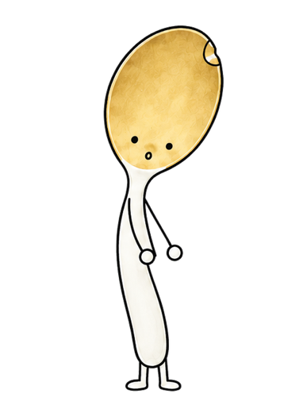
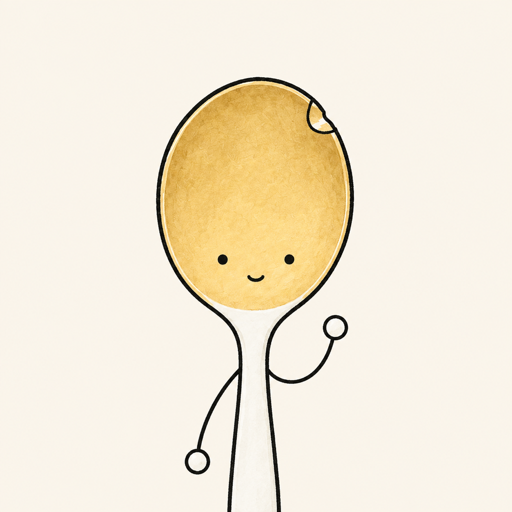
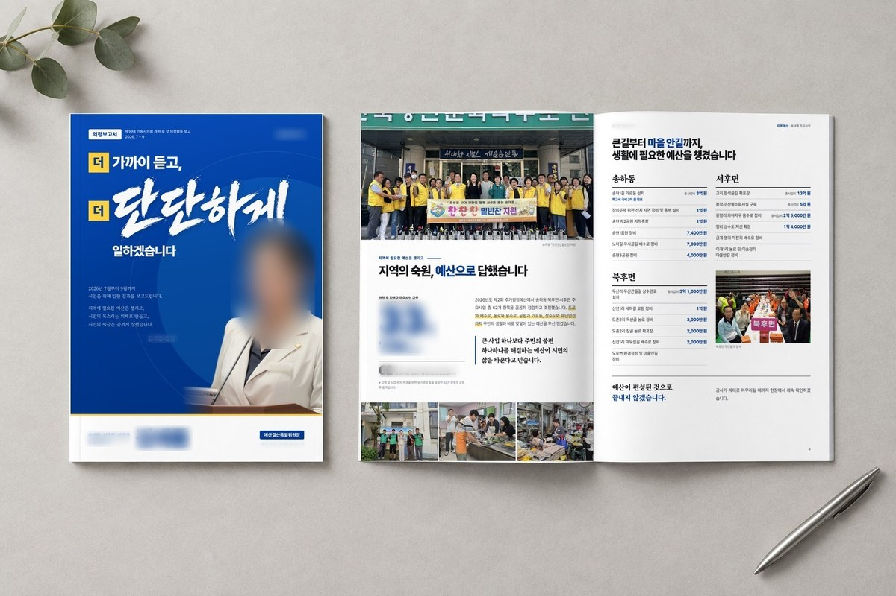
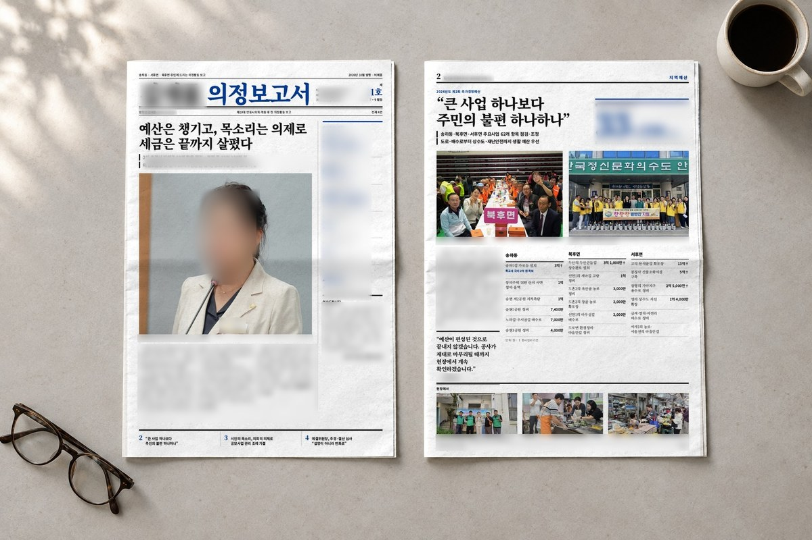
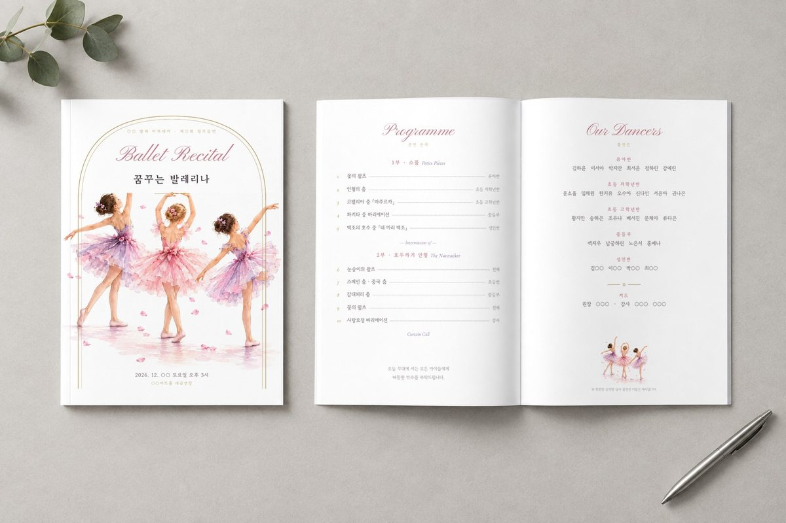
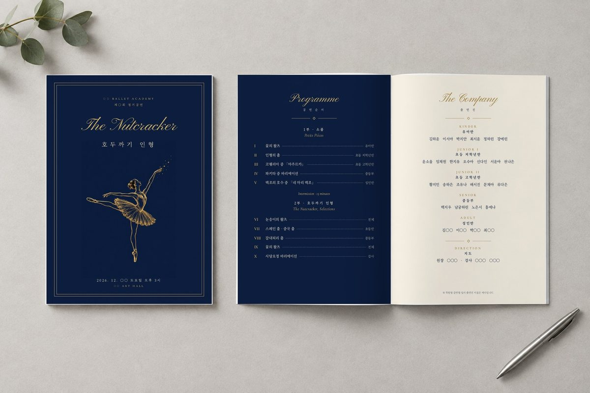
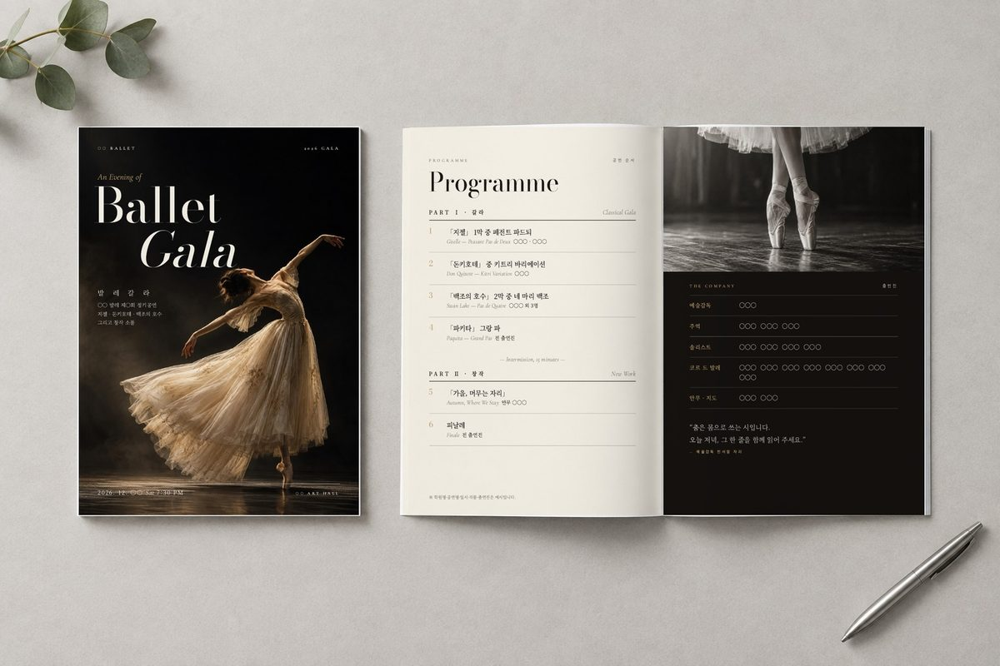

찾는 자료가 아직 없어요. 다른 말로 찾아보거나 ‘전체’를 눌러 보세요.
찾는 자료가 아직 없어요. 다른 말로 찾아보거나 ‘전체’를 눌러 보세요.아래 내용은 공식 안내에서 확인했습니다(2026년 10월 1일 기준).
출처: OpenAI 도움말
AI 이야기를 듣다 막히는 낱말을 중학생도 바로 알 수 있게 바꿔 두었습니다.
자료실에서 실제로 돌려 보고 검증한 지시문에 우리 가게·내 일 내용만 넣어 드려요. 다 채우면 복사 눌러 ChatGPT나 Claude에 붙여넣기만 하면 됩니다.
잘 된 것도, 고친 것도 그대로 적습니다. 숫자는 기록에 남은 것만 씁니다.
📄 혼자 해 보실 분은 무료 가이드부터 — 결과보고서 AI로 쓰기 6단계(PDF 11쪽)
해마다 같은 양식으로 내는 결과보고서·정산 서류가 있다면, 쓰시던 한글 파일 하나로 다음부터 내용만 넣으면 되는 틀을 만들어 드립니다. 처음 두 분은 무료입니다.
작년 보고서를 복사해 올해 것으로 고칠 때, 제가 실제로 매번 사람이 직접 확인하는 곳입니다.
실제 사례: 결과보고서 28쪽을 양식 그대로 만든 과정 · 견적서로 예정공정표 칸 채우기

경북 안동에서 일합니다. 어려운 AI를 그 자리에서 바로 따라 할 수 있게, 한 번에 한 가지씩 쉽게 알려 드리는 일을 합니다.
개인 외주로 맡아 편집 디자인한 인쇄물입니다. 둘 다 납품 전 시안 단계의 화면이고, 공개 전 자료라 정당명·이름·얼굴·수치는 흐리게 가렸습니다.





발레 팸플릿의 표지 그림과 사진, 의정보고서의 표지 붓글씨와 목업 배경 일부는 생성형 AI 이미지로 만들었고, 글자 배치와 편집은 직접 했습니다. 학원명·일시·출연진 이름은 ○○로 비워 둔 시안입니다.
쓰던 한글 양식 그대로 결과보고서 28쪽 초안을 만든 과정을 블로그에 적었습니다. 결과보고서 28쪽을 양식 그대로 만든 과정 · 견적서로 예정공정표 칸 채우기